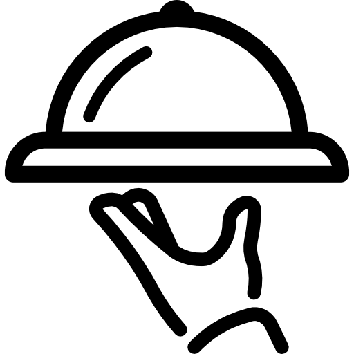

Empty Tables: How Restaurants Are (Not) Recovering From the COVID Pandemic
Andrew Ancheta
October 18, 2022
While New York has eased pandemic restrictions, the restaurant industry is still a long way to recovery. Many eateries have shut down permanently, while others have struggled to regain their pre-pandemic customer base. Supply chain bottlenecks and inflation create additional financial pressures on an already-battered industry. Below, we cover some of the issues facing restaurant owners in the post-COVID economy.
Prices

Consumer prices have increased rapidly throughout the economy. For restaurants, wholesale food costs have increased wildly. The prices of some ingredients have increased by over 100% in 2022.
Reservations
Restaurant reservations are still at 90% of their pre-pandemic level, according to a study by OpenTable. The number of seated diners is about 36% lower than the pre-pandemic average.
Staff
New York City lost 55,000 jobs in the Accommodations and Food Services Industry, according to a report by the Comptroller’s office. The relative shortage of experienced servers and chefs means that restaurants have to pay higher wages for less experienced employees.
Restaurants

Many restaurants exhausted their savings and credit to survive during the pandemic, leaving them with fewer resources to invest now that the pandemic is over. In a survey of restaurant owners by TouchBistro, 59% said they used their personal savings to keep their business afloat.